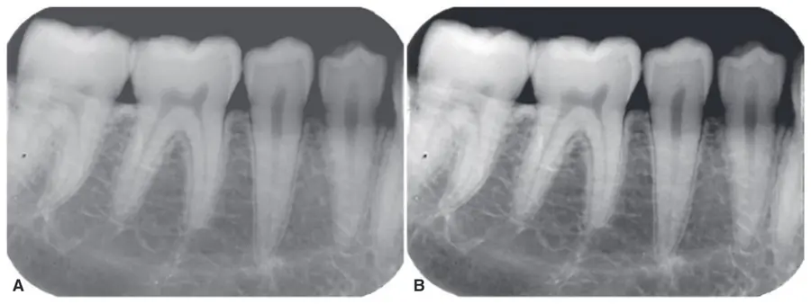

نسخه استخراجشده؛ ترجمه یا تأیید علمی انجام نشده است. وضعیت: captured
قدم 1 · theory
جدول جمعبندی گیرندههای دیجیتال
بلوک ۱ — دو فناوری و مقایسهی بالینی
حالت جامد: تصویر دیجیتال بدون دستگاه بیرونی، در پزشکی رادیوگرافی دیجیتال، در دندانپزشکی سنسور.
PSP: صفحهی فسفری با تصویر نهفته، خواندهشده با اسکنر و لیزر، نامهای دیگر فسفر ذخیرهای، صفحهی تصویر، در پزشکی رادیوگرافی محاسباتی.
جایگذاری: فیلم را میتوان خم کرد، CCD/CMOS نگهدارندهی اختصاصی، حجیم، کابلدار، ناراحتی بیشتر، PSP نگهدارندههای فیلم سازگارند ولی خم کردن آسیب برگشتناپذیر میزند.
پرتوگیری: فیلم و PSP ساده، CCD/CMOS رایانه باید پیش از پرتوگیری فعال باشد.
پردازش: فیلم اتاق تاریک و شیمی و دما، CCD/CMOS تقریباً بیدرنگ، PSP محیط کمنور، برنامهریزی پروسسور، RFID.
تکثیر: فیلم همیشه پایینتر از اصل، دیجیتال بدون افت کیفیت.
بلوک ۲ — ویژگیهای فیزیکی و دوز
تفکیک فضایی داخلدهانی: فیلم › CCD = CMOS › PSP، پانورامیک: فیلم = CCD = PSP، سفالومتریک: فیلم › CCD = PSP، پانورامیک بهدلیل حرکت مکانیکی حدود ۵ lp/mm.
عرضدید: PSP ≫ CCD ≥ CMOS › فیلم، و هشدارش: عرضدید وسیع + بهینهسازی خودکار نرمافزار = امکان پرتودهی بیش از نیاز.
ابعاد: فیلم = PSP ‹ CCD = CMOS، سطح فعال کوچکتر از سطح کل.
زمان دریافت: CCD = CMOS ≪ PSP = فیلم، مهم در اندو و جایگذاری ایمپلنت.
کیفیت: ذهناً فیلم بهترین اگر دقیق پرتودهی و پردازش شود، ولی بالینی: تفاوت معنادار در کارهای تشخیصی رایج ندارند.
پردازش تصویر: ظاهر را بهبود میدهد ولی ممکن است عملکرد تشخیصی را بهبود ندهد.
دوز: PSP حدود ۵۰٪ کمتر از فیلم سرعت F، حالت جامد کمتر از PSP و فیلم، خارجدهانی CCD و PSP مشابه صفحه-فیلم سرعت ۲۰۰، هیچ استاندارد ردهبندی برای گیرندههای دیجیتال دندانی وجود ندارد.
دو راه افزایش ناخواستهی دوز: ترجیح ذهنی تصاویر PSP پرپرتوتر و آسانی تکرار پرتوگیری با CCD.
بلوک ۳ — سنسورهای حالت جامد
اندازهی پیکسل کمتر از ۲۰ تا ۷۰ میکرومتر، بها با اندازهی ماتریکس بالا میرود.
کابل: خرابی از فرسودگی، راهحلها اتصال گوشهای، مغناطیسی، القایی، کابل تقویتشده، بیسیم، ولی بیسیم حجم را بیشتر میکند.
CCD از ۱۹۸۷، ورقهی سیلیکون، شکستن پیوند کووالانسی ← جفت الکترون-حفره متناسب با پرتوگیری ← بستهی بار (هر بسته یک پیکسل) ← خواندن زنجیرهی سطلی ← تقویتکننده ← مبدل آنالوگ به دیجیتال.
CCD به نور حساستر است تا پرتو ایکس ← نیاز به سنتیلاتور (گادولینیوم اکسیبروماید، یدید سزیم) روی سطح یا با صفحهی فیبر نوری.
CCD خارجدهانی: آرایهی خطی، پانورامیک ثابت روبهروی منبع، سفالومتری با پرتو شکافی و حرکت اسکن، با عیب آرتیفکت حرکت.
CMOS: پایهی دوربینهای مصرفی، سیلیکونی ولی هر پیکسل جدا و مستقیماً به یک ترانزیستور وصل و جداگانه آدرسدهی میشود، ارزانتر از CCD و اکنون فناوری غالب داخلدهانی.
آشکارساز تخت: پیکسل کمتر از ۱۰۰ میکرومتر، غیرمستقیم با صفحهی تشدیدکننده (گادولینیوم Z=۶۴، سزیم Z=۵۵) — ضخیمتر کارآمدتر ولی کمتیزتر، مستقیم با سلنیوم (Z=۳۴) و TFT — تفکیک بالاتر ولی کمکارآمدتر، بار در خازن هر پیکسل، گران و محدود به CBCT.
شمارش مستقیم فوتون: بدون سنتیلاتور ← تفکیک فضایی بالاتر، انرژی هر فوتون جداگانه ثبت میشود نه انباشته، در CT تصویربرداری چندانرژی.
بلوک ۴ — PSP
ماده: باریم فلوروهالید آلاییده با اروپیوم، باریم با ید، کلر یا برم شبکه میسازد، اروپیوم نقص ایجاد میکند، پایهی پلیاستر.
سه مرحله: غرقاب با نور سفید ← پرتوگیری و به دام افتادن الکترونها در مراکز F (شمار متناسب با پرتوگیری = تصویر نهفته) ← تحریک با لیزر قرمز ~۶۰۰ نانومتر و رهایش نور سبز ۳۰۰ تا ۵۰۰ نانومتر.
مسیر سیگنال: فیبر نوری ← فوتومولتیپلایر با فیلتر قرمز ← ولتاژ ← مبدل آنالوگ به دیجیتال.
پاک کردن: نور روشن، ویوباکس ۱ تا ۲ دقیقه، نور شدیدتر مدت کوتاهتر، پاک نکردن ← تصویر دوگانه و غیرتشخیصی.
محو شدن: ۲۳٪ پس از ۳۰ دقیقه، ۳۰٪ پس از ۱ ساعت، ولی یکنواخت است پس معمولاً بالینی مهم نیست، تصاویر کمپرتودیده نویز میگیرند، تصاویر کافی ۱۲ تا ۲۴ ساعت قابل نگهداریاند.
خطر بزرگتر نور محیط است، محیط نیمهتاریک، و چراغ ایمن قرمز اتاق تاریک برای PSP ایمن نیست چون بیشترین حساسیت به طیف قرمز است.
اسکنر: آینهی چندوجهی چرخان، جهت اسکن سریع = جاروب لیزر، جهت اسکن کند = پیشروی صفحه، پاک کردن خودکار، دیسک فلزی و RFID هر دو پرتودیدگی از پشت را نشان میدهند؛ RFID پروندهی بیمار را هم میبندد، بارگذاری تکتک.
عمق بیت ۸، ۱۰، ۱۲ یا ۱۶، ۲۵۶ تا ۶۵٬۵۳۶ سطح، محدودشده با نویز.
سه گلوگاه: نمایشگر ۸ بیت و عملاً ۲۴۲ سطح، چشم ~۶۰ سطح در شرایط آرمانی، مطب واقعی کمتر از ۳۰.
ویوباکس درخشانتر از نمایشگر است، پس نور محیط بر فیلم اثر کمتری دارد.
تفکیک فضایی: یک جفتخط = دو ستون پیکسل، چشم ~۶ lp/mm، فیلم داخلدهانی بیش از ۲۰، PSP بیش از ۱۰، بهترین سنسور حدود ۲۰.
محاسبه: پیکسل ۲۰ میکرومتر ← ۲۵ lp/mm ← ۱۲۷۰ DPI، پیکسل ۵۰ میکرومتر ← ۱۰ lp/mm ← ۵۰۸ DPI، ۲۵٬۴۰۰ میکرومتر در هر اینچ.
سه دلیل کمتر بودن تفکیک واقعی: نویز الکترونیکی، پخش فوتون در سنتیلاتور، جفتشدگی نوری ناقص، و بالینی هم نقطهی کانونی و دو فاصله اثر دارند.
PSP: فسفر ضخیمتر = پخش بیشتر، تفکیک کمتر، ولی جذب بهتر و گیرندهی سریعتر، تفکیک معکوس با قطر باریکهی لیزر، گام اسکن کند هم اثر دارد.
عرضدید: فیلم مفید ۰٫۵ تا ۲٫۵ چگالی (دو مرتبه)، دامنهی دینامیک بیش از چهار مرتبه ولی نیازمند نور داغ، CCD و CMOS مشابه فیلم و قابل گسترش دیجیتالی، PSP پاسخ خطی به پنج مرتبهی بزرگی.
سؤالهای این مرور سختترند و بسیاری یک عدد، یک رتبهبندی یا یک سازوکار میدهند و میپرسند کدام گیرنده، کدام مرحله، یا کدام پیامد.

کلیشهی مندیبل خشک با کنتراست کم در برابر کنتراست زیاد (White & Pharoah. Oral Radiology, 9th ed. — Fig. 4.52)
قدم 2 · question
گیرندهای توصیف میشود: صفحهای فسفری که تصویر نهفته پس از پرتوگیری در آن شکل میگیرد و با تحریک نور لیزر به تصویر دیجیتال تبدیل میشود. این کدام فناوری است و در پزشکی چه نامیده میشود؟
۰۱
فسفر تحریکپذیر با نور؛ و در پزشکی رادیوگرافی محاسباتی نامیده میشود
۰۲
آشکارساز تخت غیرمستقیم؛ و در پزشکی رادیوگرافی دیجیتال نامیده میشود
۰۳
دستگاه جفتشدهی باری؛ و در پزشکی رادیوگرافی محاسباتی نامیده میشود
۰۴
آشکارساز شمارش مستقیم فوتون؛ و در پزشکی تصویربرداری چندانرژی نامیده میشود
قدم 3 · question
در جایگذاری گیرنده، کدام تفاوت میان فیلم، سنسور و PSP درست بیان شده است؟
۰۱
فیلم را نمیتوان خم کرد، سنسور انعطافپذیر است، صفحهی PSP را میتوان بدون خطر خم کرد
۰۲
فیلم خمپذیر است، سنسور صلب و حجیم است، PSP در نگهدارندههای فیلم جا میگیرد ولی خم شدن آسیب برگشتناپذیر میزند
۰۳
هر سه گیرنده را میتوان برای تطبیق با آناتومی خم کرد، ولی تنها فیلم پس از خم شدن، سالم و بدون هیچ آرتیفکتی باقی میماند
۰۴
فیلم را میتوان خم کرد، سنسور را هم میتوان تا حدی خم کرد، صفحهی PSP کاملاً صلب است و مانند سنسور اصلاً خم نمیشود
قدم 4 · question
همکاری میگوید: «کیفیت ذهنی تصویر با فیلم بهترین است، پس برای کارهای تشخیصی رایج باید فیلم را ترجیح داد.» چرا این نتیجهگیری نادرست است؟
۰۱
کیفیت ذهنی با فیلم بهترین نیست؛ سنسورهای حالت جامد در همهی ارزیابیهای ذهنی برتر شناخته شدهاند
۰۲
برتری ذهنی فیلم تنها با پرتودهی و پردازش دقیق است؛ و در کارهای تشخیصی رایج، دیجیتال و فیلم تفاوت معناداری ندارند
۰۳
نتیجهگیری درست است ولی بهدلیل ملاحظات دوز، دیجیتال ترجیح داده میشود؛ کیفیت تشخیصی فیلم در عمل واقعاً بالاتر است
۰۴
کیفیت ذهنی فیلم تنها در تصویربرداری خارجدهانی بالاتر است و در داخلدهانی دیجیتال برتر است
قدم 5 · question
از نظر پرتوگیری لازم، رتبهبندی درست کدام است؟
۰۱
فیلم سرعت F کمتر از هر دو فناوری دیجیتال، بهدلیل سرعت بالای امولسیونهای امروزی
۰۲
PSP کمتر از آشکارسازهای حالت جامد، و حالت جامد حدود ۵۰ درصد کمتر از فیلم سرعت F
۰۳
آشکارسازهای حالت جامد کمتر از PSP، و PSP حدود ۵۰ درصد کمتر از فیلم سرعت F
۰۴
هر سه پرتوگیری یکسانی میخواهند؛ تفاوت دوز میان فناوریها اثبات نشده است
قدم 6 · question
در CCD، رابطهی بستههای بار با پیکسلها و با تصویر نهفته چیست؟
۰۱
هر پیکسل چند بستهی بار میسازد که شمارشان سطح خاکستری آن پیکسل را تعیین میکند
۰۲
هر بستهی بار با یک ردیف کامل پیکسل متناظر است، و مجموع ردیفها تصویر نهفته را میسازد
۰۳
بستههای بار در یک نقطهی مرکزی جمع میشوند و تصویر نهفته از توزیع زمانی رسیدن آنها بازسازی میشود
۰۴
هر بستهی بار با یک پیکسل متناظر است و الگوی بستهها در ماتریکس تصویر نهفته را میسازد
قدم 7 · question
در آشکارسازهای تخت غیرمستقیم، افزایش ضخامت صفحهی تشدیدکننده چه اثری دارد؟
۰۱
کارایی را پایین میآورد ولی تیزی را بالا میبرد، چون نور کمتری از لایهی ضخیم به آشکارساز میرسد
۰۲
هم کارایی و هم تیزی را بالا میبرد، چون فوتونهای بیشتری در ضخامت بیشتر جذب و به نور تبدیل میشوند
۰۳
کارایی را بالا میبرد ولی پخش بیشتر فوتونهای نور را میگذارد و به تصاویر کمتیزتر میانجامد
۰۴
اثری بر کارایی جذب پرتو ایکس ندارد و تنها دوام مکانیکی صفحه و عمر کلی آشکارساز را بالا میبرد
قدم 8 · question
دانشجویی میگوید: «در صفحات PSP، اروپیوم همان جایی است که الکترونها به دام میافتند و تصویر نهفته را میسازند.» ایراد کجاست؟
۰۱
ایرادی ندارد؛ اروپیوم هم منبع الکترون است و هم محل به دام افتادن آن
۰۲
الکترونها اصلاً از اروپیوم نمیآیند بلکه از باریم؛ و پس از پرتوگیری در اتمهای اروپیوم به دام میافتند
۰۳
در PSP هیچ به دام افتادنی رخ نمیدهد؛ الکترونها بیدرنگ به نوار ظرفیت بازمیگردند و همان لحظه نور سبز میتابانند
۰۴
الکترونها از اروپیوم میآیند ولی در مراکز F (جاهای خالی هالوژن) به دام میافتند، نه در خود اروپیوم
قدم 9 · question
هرچه نور زمینه ......... و مدت قرار گرفتن صفحه در معرض آن بلندتر باشد، تصویر حاصل تخریبشدهتر است.
حروف را به ترتیب درست لمس کنید
ت
ی
ش
د
ر
د
نوع سؤال: ساخت کلمه · 6 خانه
حروف منبع: ت · ی · ش · د · ر · د
قدم 10 · question
تفکیک PSP مستقیماً متناسب با قطر باریکهی لیزر است؛ باریکهی پهنتر جزئیات ریزتری را از صفحه بیرون میکشد.
۰۱
صحیح
۰۲
غلط
قدم 11 · question
سازندهای ارتقای آشکارساز از ۱۲ بیت به ۱۶ بیت را بهعنوان جهش تشخیصی بزرگ میفروشد. ارزیابی درست چیست؟
۰۱
سود تشخیصی چشمگیر است، چون شمار سطوح قابل دریافت شانزده برابر میشود و همهی آنها روی نمایشگر دیده میشوند
۰۲
سود محدود است، چون نمایشگر عملاً ۲۴۲ سطح و چشم در مطب کمتر از ۳۰ سطح را تمیز میدهد و نویز هم سقف میگذارد
۰۳
ارتقا زیانآور است، چون عمق بیت بیشتر نویز آشکارساز را افزایش میدهد و کنتراست را پایین میآورد
۰۴
سود تشخیصی چشمگیر است، چون عمق بیت بیشتر تفکیک فضایی را هم به همان نسبت بالا میبرد
قدم 12 · question
سامانهای تفکیک نظری ۲۵ جفتخط بر میلیمتر دارد. اندازهی پیکسلش چقدر است؟
۰۱
۲۰ میکرومتر، چون هر جفتخط ۴۰ میکرومتر است و دو پیکسل میخواهد
۰۲
۴۰ میکرومتر، چون هر پیکسل بهتنهایی پهنای یک جفتخط کامل را میپوشاند
۰۳
۵۰ میکرومتر، چون تفکیک با اندازهی پیکسل رابطهی مستقیم دارد نه معکوس
۰۴
۱۰ میکرومتر، چون هر جفتخط دستکم چهار پیکسل کامل و جداگانه لازم دارد
قدم 13 · question
عرضدید آشکارسازهای CCD و CMOS مشابه فیلم است و میتوان آن را با تقویت دیجیتال کنتراست و روشنایی گسترش داد.
عمق بیت ۸ تا ۱۶ یعنی ۲۵۶ تا ۶۵٬۵۳۶ سطح، نمایشگر عملاً ۲۴۲ و چشم در مطب کمتر از ۳۰ سطح، جفتخط دو ستون پیکسل؛ پیکسل ۲۰ میکرومتری ۲۵ جفتخط، چشم حدود ۶ جفتخط بر میلیمتر
۰۲
عمق بیت ۸ تا ۱۶ یعنی ۲۵۶ تا ۶۵٬۵۳۶ سطح، نمایشگر عملاً ۲۴۲ سطح و چشم در مطب کمتر از ۳۰ سطح، یک جفتخط یک ستون پیکسل میخواهد و پیکسل ۲۰ میکرومتری ۵۰ جفتخط میدهد، چشم حدود ۶ جفتخط را تمیز میدهد
۰۳
عمق بیت ۸ تا ۱۶ یعنی ۶۴ تا ۴۰۹۶ سطح، نمایشگر عملاً ۲۵۶ سطح و چشم در مطب حدود ۶۰ سطح، یک جفتخط دو ستون پیکسل میخواهد، چشم حدود ۲۰ جفتخط را تمیز میدهد
۰۴
عمق بیت ۸ تا ۱۶ یعنی ۲۵۶ تا ۶۵٬۵۳۶ سطح، نمایشگر عملاً ۲۴۲ سطح و چشم در مطب کمتر از ۳۰ سطح، یک جفتخط دو ستون پیکسل میخواهد و پیکسل ۲۰ میکرومتری ۲۵ جفتخط میدهد، چشم بدون بزرگنمایی حدود ۲۰ جفتخط را تمیز میدهد